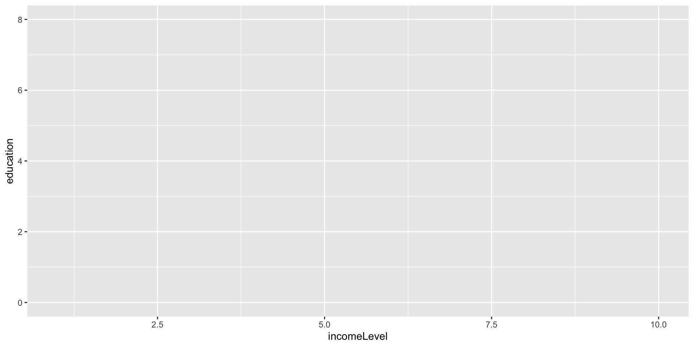
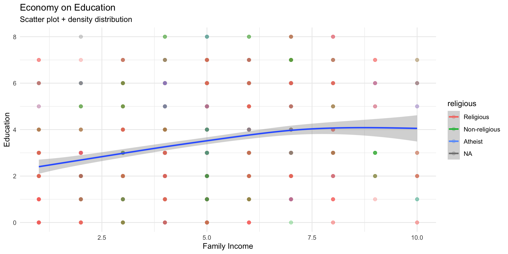
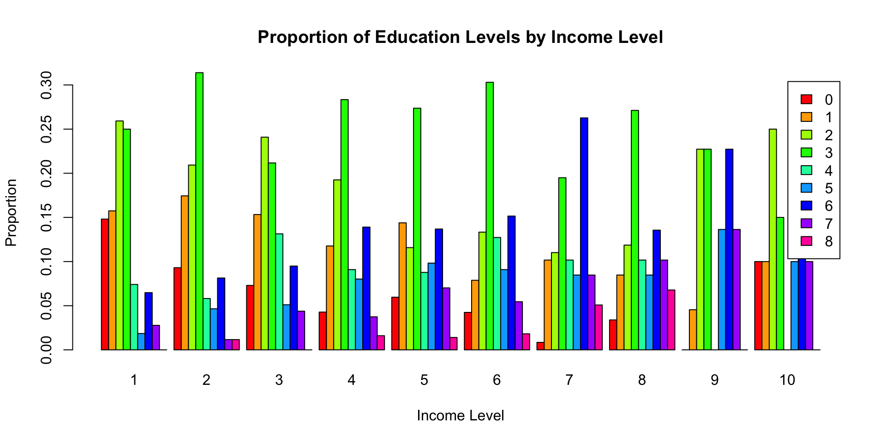
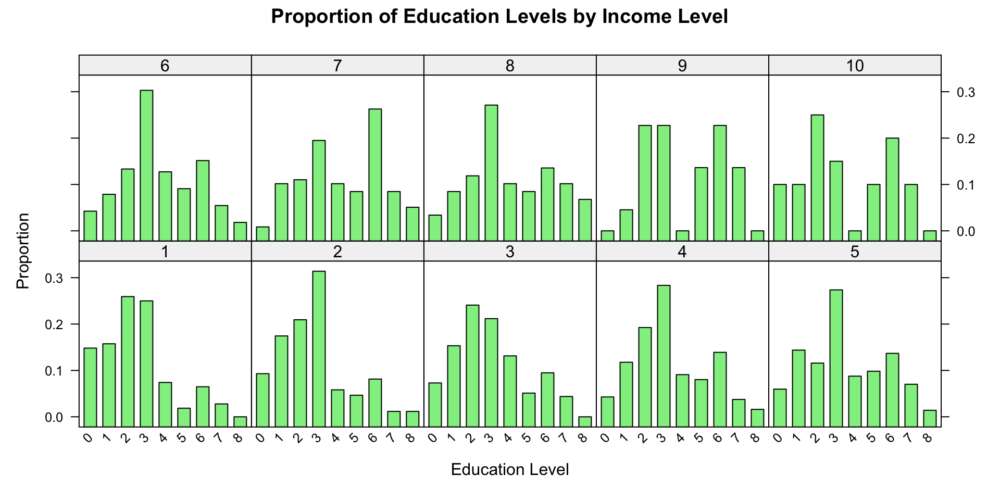

ggplot(data = wvs,aes(x = incomeLevel, y = education, color = religious))

ggplot(data = wvs,aes(x = incomeLevel, y = education, color = religious)) +geom_point(size =2, alpha =0.3) +geom_smooth(aes(color =NULL), se=TRUE) +labs(title ="Economy on Education" ,subtitle ="Scatter plot + density distribution",x ="Family Income", y ="Education") +theme_minimal()

Universal formula for plotting with ggplot
# Load the ggplot2 packagelibrary(ggplot2)# General ggplot templateggplot(data =<your_data>, aes(x =<x_variable>, y =<y_variable>, fill =<fill_variable>, color =<color_variable>)) +<geom_function>(aes(group =<group_variable>), size =<size_value>, shape =<shape_value>, alpha =<alpha_value>) +labs(title ="<Your Plot Title>", subtitle ="<Subtitle>", x ="<X-axis Label>", y ="<Y-axis Label>", fill ="<Legend Title for Fill>", color ="<Legend Title for Color>") +theme_minimal() +# Use theme of your choicetheme(plot.title =element_text(hjust =0.5), # Center the titlelegend.position ="<legend_position>") +# Legend position options: "none", "left", "right", "bottom", "top"scale_color_manual(values =<custom_color_palette>) +# Custom color palette (optional)scale_fill_manual(values =<custom_fill_palette>) # Custom fill palette (optional)
ggplot() initializes the plot.
aes() defines the aesthetic mappings (like x, y, color, and fill).
geom_*() specifies the type of plot (scatter, bar, line, etc.).
# Create a contingency table of income level and educationincome_education_counts <-table(wvs$incomeLevel, wvs$education)# Calculate proportions within each income levelincome_education_props <-prop.table(income_education_counts, 1)# Use barplot() to draw the bar chart with proportionsbarplot(t(income_education_props), # Transpose to have education levels as barsmain ="Proportion of Education Levels by Income Level",xlab ="Income Level",ylab ="Proportion",col =rainbow(ncol(income_education_props)),legend =colnames(income_education_props),beside =TRUE)

# Load the lattice packagelibrary(lattice)# Calculate proportions for each income levelprop_data <-as.data.frame(prop.table(table(wvs$incomeLevel, wvs$education), 1))# Use barchart() to draw the bar chart with proportionsbarchart( Freq ~ Var2 | Var1,data = prop_data,main ="Proportion of Education Levels by Income Level",xlab ="Education Level",ylab ="Proportion",col ="lightgreen",horizontal =FALSE,scales =list(x =list(rot =45)))

# Load the ggplot2 packagelibrary(ggplot2)library(dplyr)# Calculate proportions within each income levelprop_data <- wvs %>%group_by(incomeLevel, education) %>%summarise(count =n()) %>%mutate(proportion = count /sum(count))# Use ggplot2 to draw the bar chart with proportionsggplot(data = prop_data, aes(x = incomeLevel, y = proportion, fill =factor(education))) +geom_bar(stat ="identity", position ="dodge") +labs(title ="Proportion of Education Levels by Income Level",x ="Income Level",y ="Proportion",fill ="Education Level" ) +theme_minimal() +theme(plot.title =element_text(hjust =0.5),legend.position ="bottom",axis.text.x =element_text(angle =45, hjust =1) ) +scale_fill_brewer(palette ="Set3")